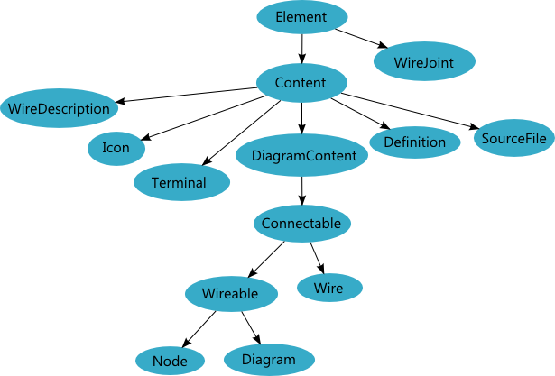
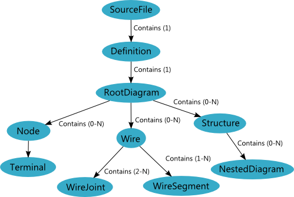

The Diagram Object Model
The Diagram Object Model (DiOM) is a meta-model for modeling diagram models. The DiOM defines a set of diagram modeling classes that model hierarchical and diagrammatic systems. When creating applications based on the Diagram SDK, you will derive your model objects from Element, the root base class of the DiOM hierarchy.
Diagram Object Model Architecture
The following figure illustrates the high-level architecture of the diagram object model. There are many more classes in the DiOM class hierarchy, but the types in this figure represent some of the most important components of the DiOM. Each connection represents an object-oriented inheritance relationship.

Diagram Object Model Theory of Operation
The base type Element is the foundation of the DiOM's hierarchical modeling. Every object in your modeling hierarchy must ultimately derive from Element. However, Element is a light-weight class that does not provide a great deal of functionality. As a MoC developer, most of the model Elements you define will most likely derive from Node or one of its descendants.
The Owner–Component Hierarchy All Elements in a model are related to one another in a hierarchy defined by their Owner and Components properties. The hierarchy of an Element's ownership chain comprises the element's ancestry. The Elements reachable by traversing an Element's chain of owned components comprise the Element's descendants. The ancestor and descendant relationships are important since a number of Diagram SDK features rely on finding services through ancestors or descendants.
The following figure illustrates the basic structure of the DiOM Owner-Component hierarchy.

As shown in the figure above, SourceFile serves as the root of the Owner-Component hierarchy. Generally, the only Element that a SourceFile should directly contain is a Definition, which is the abstract class from which you should derive the root object of your modeling hierarchy.
Automatic Management of Ownership
Each Element can have only one owner at a time, which means that a given element cannot appear in multiple places within the model hierarchy. This single-owner restriction allows the Diagram SDK to automatically manage owner/component relationships. Thus, when an element is added to a new owner's components, the Diagram SDK automatically updates element's Owner property and removes the element from its old owner's Components property.
Ensuring DiOM Validity
For the system to function correctly, every Element must report its property changes to the transaction system through its TransactionRecruiter. Before finalizing a transaction, the transaction system validates the Elements affected by the transaction. At any given time, an element can either be valid or invalid. A valid Element has a consistent state and consistent relationships with other Elements. An Element's validity is determined by calling its Validate method, which in turn invokes CheckModel. In your derived Elements, you should override CheckModel to enforce your own modeling restrictions.
Linking to External Dependencies
The name resolution is the only mechanism that the Diagram SDK officially supports for linking to external dependencies. The Definition base class, by implementing the IQualifiedScope interface, enables your modeling hierarchy to participate in the name resolution system.
Reporting Errors and Warnings
The Diagram SDK provides the messaging system for reporting errors and warnings on Elements. All Elements participate in the messaging system by default, and each Element's GetMessages method returns messages regarding the state of the Element.